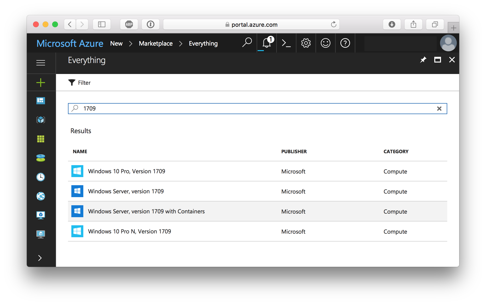
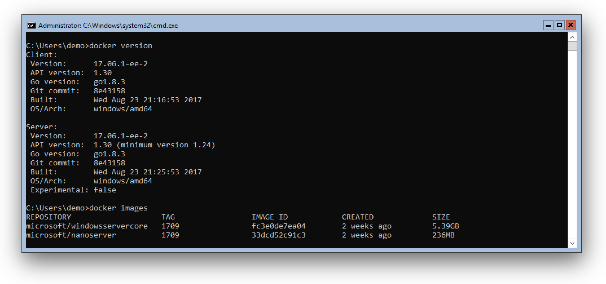
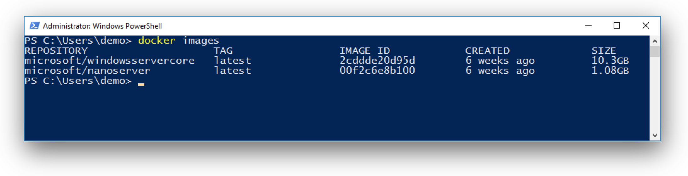
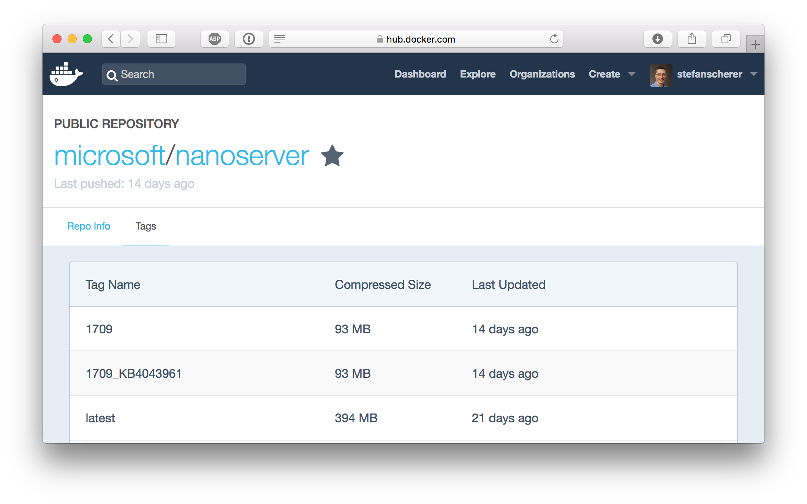
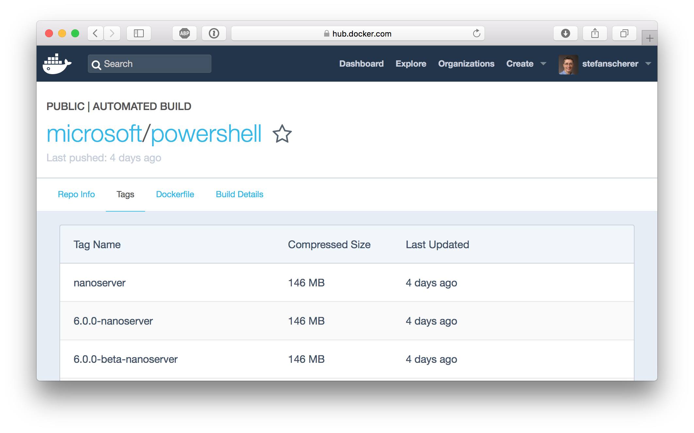
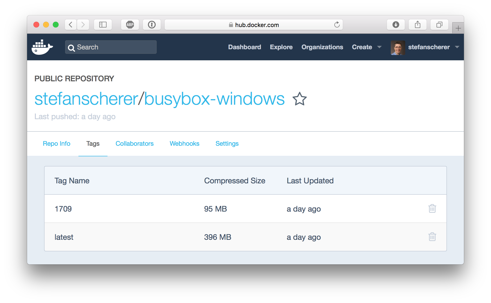
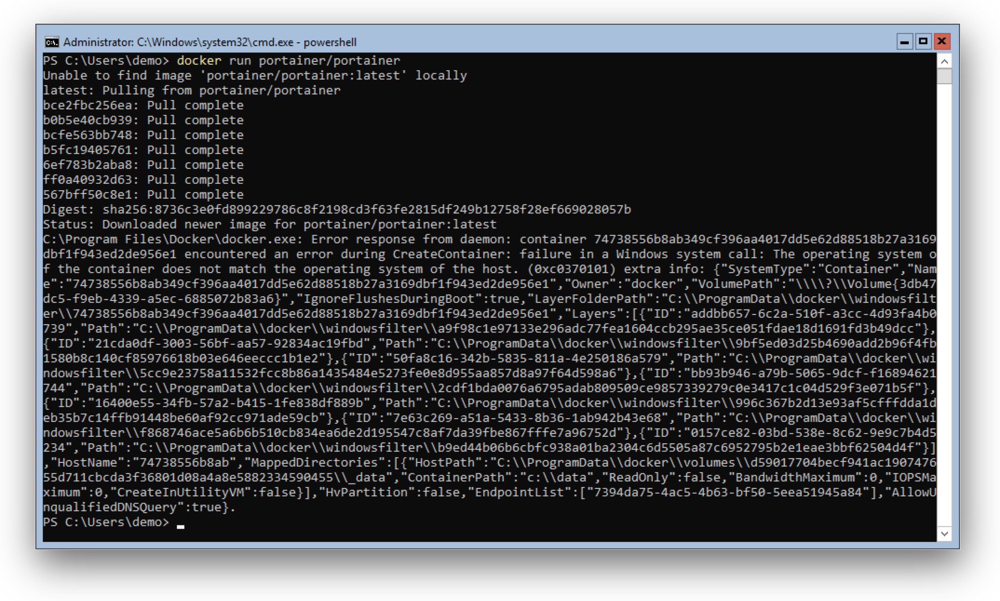
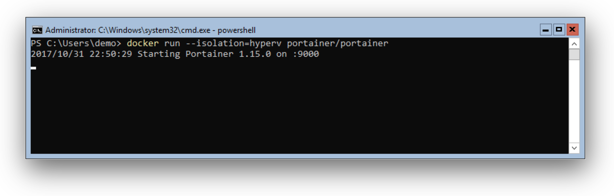
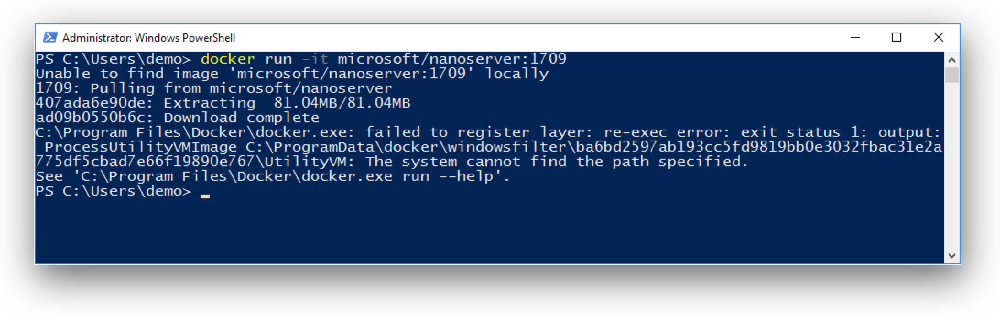

Today Microsoft has released Windows Server 1709 in Azure. The ISO file is also available in the MSDN subscription to build local VM's. But spinning up a cloud VM makes it easier for more people.
So let's go to Azure and create a new machine. The interesting VM for me is "Windows Server, version 1709 with Containers" as it comes with Docker preinstalled.

After a few minutes you can RDP into the machine. But watch out, it is only a Windows Server Core, so there is no full desktop. But for a Docker host this is good enough.

As you can see the VM comes with the latest Docker 17.06.1 EE and the new 1709 base images installed.
Smaller "1709" base images
On great news is that the base images got smaller. For comparison here are the images of a Windows Server 2016:

So with Windows Server 1709 the WindowsServerCore image is only 1/2 the size of the original. And for the NanoServer image is about 1/4 with only 93 MB on the Docker Hub.

That makes the NanoServer image really attractive to deploy modern microservices with it. As you can see, the "latest" tag is still pointing to the old image. As the 1709 release is a semi-annual release supported for the next 18 months and the current Windows Server 2016 is the LTS version, the latest tags still remain to the older, thicker images.
So when you want to go small, then use the "1709" tags:
- microsoft/windowsservercore:1709
- microsoft/nanoserver:1709
Where is PowerShell?
The small size of the NanoServer image comes with a cost: There is no PowerShell installed inside the NanoServer image.
So is that really a problem?
Yes and no. Some people have started to write Dockerfiles and installed software using PowerShell in the RUN instructions. This will be a breaking change.
The good news is that there will be a PowerShell Docker image based on the small nanoserver:

Currently there is PowerShell 6.0.0 Beta 9 available and you can run it with
docker run -it microsoft/powershell:nanoserver
As you can see PowerShell takes 53 MB on top of the 93 MB nanoserver.
So if you really want to deploy your software with PowerShell, then you might use this base image in your FROM instruction.
But if you deploy a Golang, Node.js, .NET Core application you probably don't need PowerShell.
My experience with Windows Dockerfiles is that the common tasks are
- downloading a file, zip, tarball from the internet
- extracting the archive
- Setting an environment variable like PATH
These steps could be done with tools like curl (yes, I think of the real one and not the curl alias in PowerShell :-) and some other tools like unzip, tar, ... that are way smaller than the complete PowerShell runtime.
I did a small proof of concept to put some of the tools mentioned into a NanoServer image. You can find the Dockerfile an others in my dockerfiles-windows GitHub repo.

As you can see it only takes about 2 MB to have download and extracting tools. The remaining cmd.exe in the NanoServer image is still good enough to run these tools in the RUN instructions of a Dockerfile.
Multi-stage builds
Another approach to build small images based on NanoServer comes with Docker 17.06. You can use multi-stage builds which brings you so much power and flexibility into a Dockerfile.
You can start with a bigger image, for example the PowerShell image or even the much bigger WindowServerCore image. In that stage of the Dockerfile you have all scripting languages or even build tools or MSI support.
The final stage then uses the smallest NanoServer use COPY deploy instructions for your production image.
Can I use my old images on Server 1709?
Well, it depends. Let's test this with a popular application from portainer.io. When we try to run the application on a Windows Server 1709 we get the following error message: The operating system of the container does not match the operating sytem of the host.

We can make it work when we run the old container with Hyper-V isolation:

For the Hyper-V isolation we need Hyper-V installed. This works in Azure with the v3 machines that allows nested virtualization. If you are using Windows 10 1709 with Hyper-V then you also can run old images in Docker 4 Windows.
But there are many other situations where you are out of luck:
- other cloud providers that does not have nested virtualization
- VirtualBox
So my recommendation is to create new Docker images based on 1709 that can be used with Windows 10 1709, or Windows Server 1709 even without Hyper-V. Another advantage is that your users have much smaller downloads and can run your apps much faster.
Can I use the 1709 images on Server 2016?
No. If you try to run one of the 1709 based images on a Windows Server 2016 you see the following error message. Even running it with --isolation=hyperv does not help here as the underlying VM compute of your host does not have all the new features needed.

Conclusion
With Docker on Windows Server 1709 the container images get much smaller. Your downloads are faster and smaller, the containers start faster. If you're interested in Windows Containers then you should switch over to the new server version. The upcoming Linux Containers on Windows feature will run only on Windows 10 1709/Windows Server 1709 and above.
As a software vendor providing Windows Docker images you should provide both variants as people still use Windows 10 and Windows Server 2016 LTS. In a following blog post I'll show a way that makes it easy for your users to just run your container image regardless the host operating system they have.
I hope you are as excited as I am about the new features of the new Windows Server 1709. If you have questions feel free to drop a comment below.
Stefan
@stefscherer